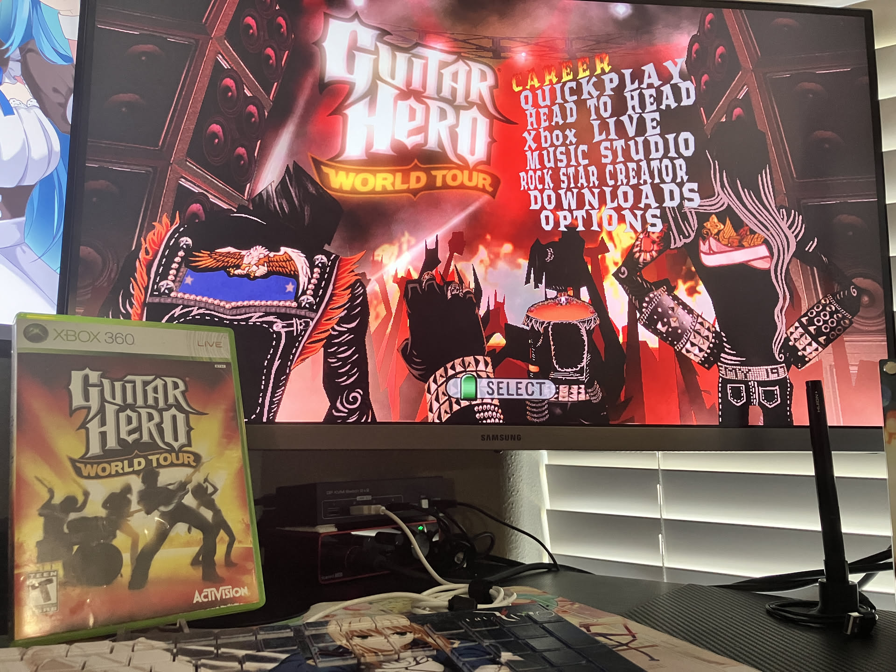

1game1week - Week 22 (5/29/25) - Guitar Hero: World Tour
Hey all! It's week 22! (5/28 -> 6/4)
I forgot to make a post yesterday... whoops.
Well... it's probably okay. I feel a bit sad because I want to be consistent with this but I'll live anyway.
Life stuff... Oh! I bought a new camera. That's cool right? And I fixed a big problem with my 3D printer. I'm livin the life.
Went on a trip to a nearby city recently and it was really fun. It was my first time going. One of my coworkers' band was playing at a restaurant / bar so I went and saw him. Had a few drinks, had fun in the city. Win win I'd say.
Also, I made a post about a mod I did on a SCART switch to get serial data off of it using an Arduino Nano. You can see the post here. I had a lot of fun with it! I'll be editing it soonish to include a way to convert it from push-pull serial to open-drain. Makes things a bit nicer.
Anyways!
New games from 5/21 -> 5/27:
None!
Currently, my backlog is at +12 (lower is better, +0 from last week).
And onto 1g1w. Once again, a game is considered "beaten" if I've accomplished the main objective of the game.
GAME: Guitar Hero: World Tour
PLATFORM: Xbox 360
STARTED ON: 4/17
BEATEN ON: 4/25
I'm not gonna sit here and have anyone say 'that's just Guitar Hero, it doesn't count!'. No. I didn't spend 8 hours in that game for you to think that. I did my time with the plastic guitar.
This actually had a really decent setlist and fun charting, so I was glad I played it.
I've also added a few of the songs to the playlist I typically listen to so... nice!
To be honest, I started playing this because after Chapter 7 of Higurashi my brain was so fried I wanted to just feel something. Do something brainless. Does that make sense?
It really just felt like, "move my fingers while listening to music", rather than "playing Guitar Hero". I think the plastic guitar has been ingrained so deep into my brain that it just feels natural.
For fun, I picked up my actual guitar. I was nowhere near as good as with plastic, but it was really fun to play nonetheless.
During 2020-2021, I was really big into Clone Hero. It's probably just where I picked up how to actually be decent at playing plastic guitars... I wouldn't say good or great by any means, but definitely good enough to get through the games and snag a few FCs.

Thanks for reading! If you need to contact me for any reason, please feel free to email me at aru@hoshikawa-aru.com.